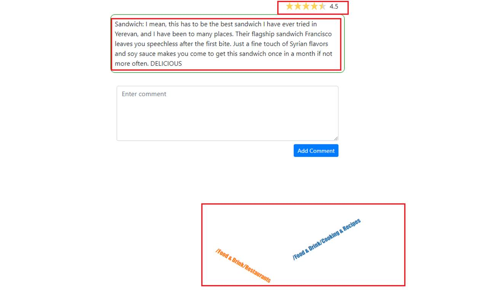
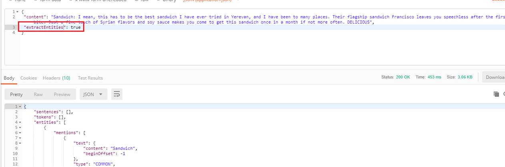

Mapping Sentiment Analysis results onto a 5-star rating in a review and generating Tag Cloud from Content Classification.
Video link: https://youtu.be/2tZe1zAXpoA
Git Repository: https://github.com/Ashot72/Sentiment-Analysis-and-Content-Classification
Natural Language uses machine learning to reveal the structure and meaning of text. You can extract information about people, places, and events, and better understand social media
sentiment and customer conversations. Natural Language enables you to analyze text and also integrate it with your document storage on Google Cloud Storage.
The powerful pre-trained models of the Natural Language API let developers work with natural understanding features including sentiment analysis, entity analysis, entity sentiment
analysis, content classification and syntax analysis.
Sentiment analysis inspects the given text and identifies the prevailing emotional option within the text, especially to determine a writer's attitude as positive, negative, or natural.
Entity analysis inspects the given text for known entities (Proper nouns such as public figures, landmarks, and so on. Common nouns such as restaurant, stadium, and so on.) and
returns information about those entities.
Entity sentiment analysis inspects the give text for known entities (proper nouns and common nouns), returns information about those entities, and identifies the prevailing emotional
option of the entity within the text, especially to determine a writer's attitude toward the entity as positive, negative, or natural.
Syntactic analysis extracts linguistic information, breaking up the given text into a series of sentences and tokens (generally, word boundaries), providing further analysis on those tokens.
Content classification analysis text content and returns a content category for the content.
There is annotateText convenience method that provides all the features such as analyzeSentiment, analzeEntities etc. in one call.
Our app's cloud function makes use of annotateText method to provide all features. This basically means that instead of writing a code for each feature we just can write a single code
targeting all features and we did exactly that.
Before writing a cloud function we have to do create a Google Cloud project, enable both Cloud Natural Language API and Google Cloud Functions API.
Figure 1
You should go to https://console.cloud.google.com and create a new project. I already created a project called gcloud.
Figure 2
The next step is to enable APIs. Select APIs & Services then Library.
Figure 3
Search Natural and enable Cloud Natural Language API.
Figure 4
You will see ENABLE IT blue button instead of MANAGE. I already enabled it.
Figure 5
I clicked MANAGE and accessed Cloud Natural Language API page.
Figure 6
Similarly, we enable Cloud Functions API.
Figure 7
Enable Cloud Function API.
Figure 8
Cloud Function API is enabled.
Figure 9
It is time to create a Cloud Function. Select Cloud Function option.
Figure 10
I already created a cloud function called analysis. There is CREATE FUNCTION button to create a new one. Click it.
Figure 11
Here is the page you create a cloud function by specifying a function name.
Figure 12
We installed both @google-cloud/language and cors packaged which are required for our app. Our cloud function requires two parameters; first one is content which is the content to be analyzed
and the second one is features we already discussed. You can specify one or more features to analyze (will be discussed). You will get an exception if no feature is passed.
Figure 13
Here is package.json with two packages installed.
You will find https REST endpoint by clicking Equivalent REST link. This is the URL we specified in our project's url.js file to call the cloud function.
Figure 14
Let's add a comment. You will see both 5-star rating and tag cloud appearing on the page once you add a comment. 5-star analysis I generated via Semantic Analysis (extractDocumentSentiment).
documentSentiment (will be discussed) contains the overall sentiment of the document, which consists of the following fields:
score of the sentiment ranges between -1.0 (negative) and 1.0 (positive) and corresponds to the overall emotional leaning of the text.
magnitude indicates the overall strength of emotion (both positive and negative) within the given text, between 0.0 and +inf. Unlike score, magnitude is not normalized; each expression
of emotion within the text (both positive and negative) contributes to the text's magnitude (so longer text blocks may have greater magnitudes). A higher value of magnitude indicates
that the strength of the sentiment.
Sentiment is Clearly Positive for score score:0.8, magnitude:3.0
Sentiment is Clearly Negative for score:-0.6, magnitude:4.0
Sentiment is Natural for score:0.1, magnitude:0.0
Sentiment is Mixed for score:0.0, magnitude:4.0
Let's test it using Postman which is a powerful HTTP client for testing web services.
Figure 15
We are calling the cloud function by specifying content with extractDocumentSentiment feature and getting a valid response.
Figure 16
documentSentiment node contains overall document sentiment score and magnitude. Document overall sentiment score is used for 5-star rating.
sentences contain a list of the sentences extracted from the original document which contains:
sentiment; contains the sentence level sentiment values attached to each sentence, which contain score and magnitude values as described above.
Figure 17
The score for the sentence Very nice place to meet with friends and family especially after work is 0.899 and magnitude has the same value, I do not know why there are always the same.
Figure 18
We already stated that score can not have a negative value and I tried with a content of a negative score. You can see that again score and magnitude have the same value but the value
of magnitude is positive while score's is negative.
Instead of talking about score's positive, neutral and negative options we could consider the following categories Very positive, Positive, Neutral, Negative, Very negative and map
onto a 5-star rating in a review, e.g.: Very Positive = 5 stars and Very negative = 0.5 stars.
Figure 19
Here is mapRating function that maps scores to ratings.
Figure 20
You may notice that tokens, entities and categories branches are empty. They are empty because they refer to Entity, Syntactic analysis and Content Classification that we will discuss soon.
Figure 21
Our app generates tag cloud from content classification. For the specified comment there are two categories /Food & Drink/Restaurants and /Food & Drink/Cooking & Recopies.
Note, that if /Food & Drink and /Food & Drink/Restaurants both apply to a document, then only the /Food & Drink/Restaurants category is returned, as it is the more specific result.
Content classification is the process of assigning tags of categories to text according to its content. It is one of the fundamental tasks in Natural Language Processing (NLP). Unstructured data
in the form of text is everywhere: emails, chats, web pages, social media, support tickets, Survey responses and more. Text can be an extremely rich source of information, but extracting insights from it can
be very hard and time-consuming due to the unstructured nature. So, content classification (text categorization or text tagging) is the task of assigning a set of predefined categories to free-text.
Text classification can be used in a broad range of context such as classifying short texts (e.g. tweets, headlines) or organizing much larger documents (e.g. customer reviews, media articles or legal contracts).
Figure 22
https://cloud.google.com/natural-language/docs/categories This is the complete list of content categories for the classifyText method.
Figure 23
I highlighted the categories found for the comment we added (Figure 21).
Figure 24
Testing the same comment in Postman. We see not only the category name but also confidence which is the classifier's confidence of the category. Number represents how certain the classifier
is that this category represents the given text.

Figure 25
Both a 5-star rating and tag cloud are rendered when we add a comment. This is because we pass two features extractSentimentDocument and classifyText.
Figure 26
Setting true both for extractSentimentDocument and classifyText.
Figure 27
This time the response includes sentences, categories and documentSentiment nodes as extractSentimentDocument and classifyText are specified in the request.
Setting any feature with classifyText may not work in certain circumstances.
Figure 29
A customer commented Customer service is really good at this restaurant. and an exception occurred.
Figure 30
The reason is that content to be classified must have at least 20 tokens (words) in order for the Natural Language API to return a response.
Sentiment Analysis (extractDocumentSentiment) works with less characters but as we call extractDocumentSentiment with classifyText then
we get an error when a comment contains less than 20 tokens. To avoid it we should call extractDocumentSentiment and classifyText
separately. It is time to test it in Postman.
Figure 31
Testing Customer service is really good at this restaurant in Postman with two features. The same error.
Figure 32
Specifying only extractDocumentSentiment feature. We got a valid response as classifyText was not specified.

Figure 33
Specifying classifyText and the same error. You should be careful and do not call the cloud function with classifyText feature if content to be classified have less than 20 tokens (words).
Figure 34
We also stated that the cloud function call should include at least one feature to avoid an exception. Here we call the function without a feature and getting an exception.
Figure 35
Calling the cloud function without a content makes no sense.
Figure 35
Cloud Function implementation (Figure 12) can be found under cloud folder in GitHub repository.
Figure 36
Let's test features that are not used in the app but the cloud function can handle it such as extractEntitySentiment.
Figure 37
As we already specified:
Entity sentiment analysis inspects the give text for known entities (proper nouns and common nouns), returns information about those entities, and identifies the prevailing emotional option
of the entity within the text, especially to determine a writer's attitude toward the entity as positive, negative, or natural.
You can see Yerevan with LOCATION type, or Sandwich having COMMON type with its score and magnitude.

Figure 38
Testing with extractEntities feature.
Figure 39
Entity analysis inspects the given text for known entities (Proper nouns such as public figures, landmarks, and so on. Common nouns such as
restaurant, stadium, and so on.) and returns information about those entities.
Here are Entity analysis results. Note, sentiment is always null as Entity analysis does not include sentiment analysis.
Figure 40
The last one is extractSyntax.
Figure 41
Syntactic analysis extracts linguistic information, breaking up the given text into a series of sentences and tokens (generally, word boundaries), providing further analysis on those tokens.
Only sentences and tokens nodes with values are returned for this feature.